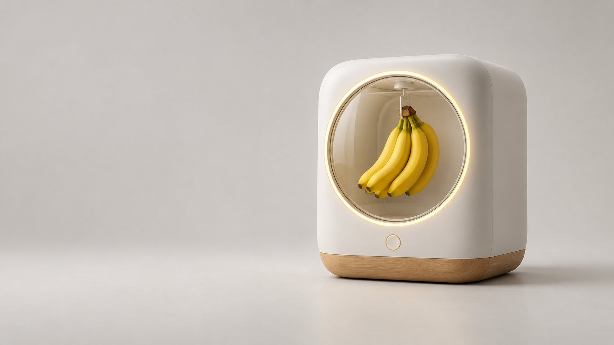
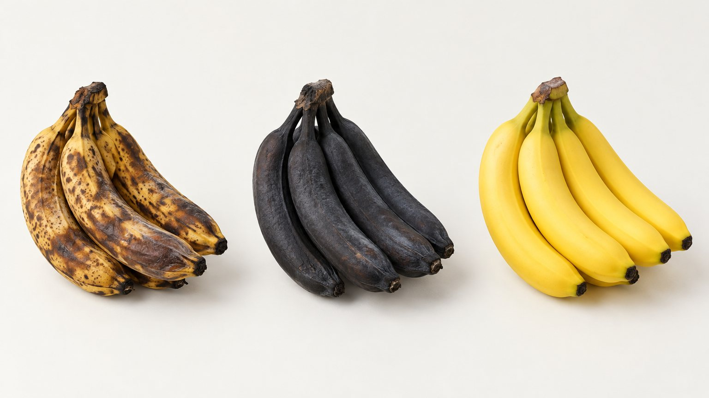
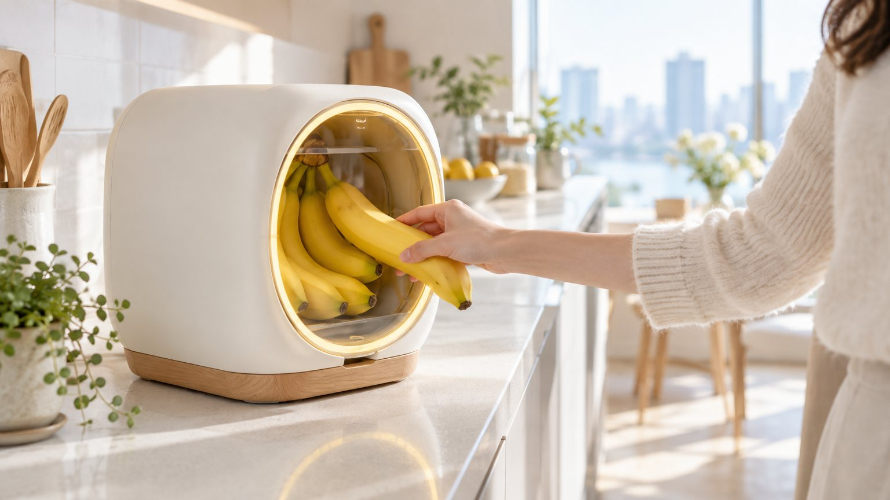
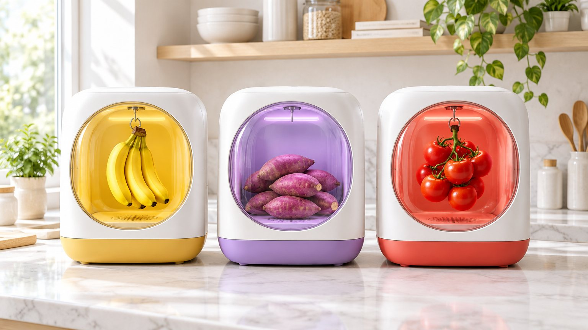

바나나 한 송이, 다 먹기 전에 버린 적 있으시죠.
냉장고도 온장고도 아닌 서늘고가 1~2주 동안 처음 산 날의 색 그대로 지킵니다.
서늘고는 휴롬의 범위를 착즙 단계에서 재료를 보관하는 단계까지 넓히는 첫 제품입니다.
휴롬은 「통째로 짜서 영양을 그대로」 마시는 경험을 팝니다. 그런데 주스 맛은 짜기 전 재료 상태에서 이미 반은 정해집니다.
냉장고는 열대 과일과 뿌리채소에 너무 차갑고(저온 장해), 실온은 너무 덥습니다. 그래서 재료가 짜기도 전에 무르거나 까매집니다.
출시 전에 국내외 경쟁 제품을 한 번 더 조사해야 합니다.
| 위험 | 대응 |
|---|---|
| 펠티어 소음·전력이 목표를 못 맞춤 | 시제품으로 소음(dB)과 하루 전력을 먼저 재고, 못 맞추면 팬 속도와 단열부터 손봄 |
| 여름 위주인 계절 수요 | 겨울에는 「재료 숙성 모드」(익히기)로 연중 용도를 만듦 |
| 「냉장고 하나 더?」 공간 부담 | 크기를 바나나 2송이 기준으로 작게 유지하고, 주방 상판에 두는 디자인 |
밖에 두면 사흘 만에 무르고, 냉장고에 넣으면 하루 만에 껍질이 까매집니다. 한 송이를 그 안에 다 못 먹어서, 버리는 게 아까워 아예 적게 사는 집이 생깁니다.

빨리 익어 금방 무릅니다.
12°C 아래에서는 저온 장해를 입습니다.
목표치입니다. 11/23~12/07 14일 보관 실험으로 확인합니다.
바닥에 닿지 않아 눌린 자국이 생기지 않습니다.
앞면 버튼을 누를 때마다 바나나 → 고구마 → 토마토로 바뀝니다. 온도가 같이 바뀌고 빛 링이 짧게 깜빡여 알려 줍니다. 앱은 필요 없습니다.
버튼을 길게 누르면 18°C로 익히고, 48시간 뒤 보관 모드로 돌아갑니다.

스크롤을 내리면 서늘고가 부품별로 분해됩니다. 다시 올리면 합쳐집니다.
위쪽 슬릿으로 펠티어 열을 내보내고, 아래쪽 슬릿으로 바깥 공기를 빨아들입니다. 12V 전원 단자와 명판도 뒤에 있습니다.
펠티어 소자 하나를 안쪽·바깥쪽 방열판과 팬이 감쌉니다. 안쪽 팬 바람이 UV 광촉매 망을 지나며 에틸렌을 분해하고, 맺힌 물은 바닥 트레이 심지로 돌아가 습도를 지킵니다.
위쪽 뒤에서 빨아들인 공기가 광촉매 망과 냉각판을 지나 아래 앞쪽으로 나오고, 바나나 주위를 한 바퀴 돕니다. 파란 점이 공기 흐름입니다.
앞면 버튼 하나를 누를 때마다 바나나 → 고구마 → 토마토로 바뀌고, 온도(13~15°C)가 같이 맞춰집니다. 몸체는 하나, 하단 색(노랑·초록·빨강)만 바꿔 금형은 그대로 씁니다. 창 빛 링과 버튼 링은 하단과 같은 색으로 켜집니다. 구조 3D에서 색을 바꿔 보기
=======앞면 버튼 하나를 누를 때마다 바나나 → 고구마 → 토마토로 바뀌고, 빛 링 색과 온도(13~15°C)가 같이 맞춰집니다. 몸체는 하나, 하단 색(노랑·보라·빨강)만 바꿔 금형은 그대로 씁니다. 구조 3D에서 색을 바꿔 보기
>>>>>>> Stashed changes
껍질이 까매지지 않고 향이 남습니다.
냉장고에 넣으면 심이 굳고 맛이 떨어집니다.
저온 장해 경계(12°C)에서 3°C 떨어뜨렸습니다. 냉장고에 넣으면 식감이 푸석해집니다.
| 기본 | |
|---|---|
| 제품명 | 휴롬 서늘고 (가칭) · 과일·채소 보관 가전 |
| 크기 · 무게 | 약 26 × 26 × 25cm (W×H×D) · 약 4kg (목표) |
| 안쪽 용량 | 6.4L · 바나나 한 송이 또는 고구마·토마토 1~1.5kg |
| 색상 | 흰 몸체 + 하단 3색 (노랑 · 초록 · 빨강) · 빛 링도 같은 색 |
| 색상 | 흰 몸체 + 하단 3색 (노랑 · 보라 · 빨강) · 빛 링도 같은 색 |
| 보관 | |
| 온도 모드 | 바나나·망고 14°C · 고구마·단호박 13°C · 토마토·아보카도 15°C · 익히기 18°C(48시간 뒤 자동 복귀) |
| 온도 범위 | 실온보다 최대 약 12°C 낮게 (여름 30°C에서도 14°C 유지 목표) |
| 습도 | 85~95% · 물받이 트레이 심지로 맺힌 물을 되돌림 |
| 에틸렌 관리 | UV-A LED(365nm) + 광촉매(TiO₂) 망 · 필터 교체 없음 · 익히기 때는 끔 |
| 구조 · 전기 | |
| 냉각 | 펠티어 소자 1개 + 안쪽·바깥 방열판 + 팬 2개 (컴프레서·냉매 없음) |
| 단열 | 발포 우레탄 2.5cm |
| 전원 | 12V 전용 외장 어댑터 · 하루 0.5kWh 이하 목표 |
| 소음 | 35dB 이하 목표 |
| 조작 · 표시 | 버튼 1개 · 누를 때마다 바나나 → 고구마 → 토마토 · 길게 누르면 익히기 · 창 둘레 빛 링·버튼 링이 제품 색(노랑·초록·빨강)으로 켜지고, 품목이 바뀔 때 짧게 깜빡임 |
| 문 | 둥근 투명 창 · 자석 패킹 |
| 생산 · 인증 | |
| 새 금형 | 3벌 (몸체 · 뒷커버 · 문틀) · 하단 색만 바꿔 같은 금형 사용 |
| 냉각부 | ODM 기존 펠티어 플랫폼 활용 |
| 인증 | 어댑터 KC 안전 · 본체 KC 전자파 · 식품 접촉부 소재 기준 |
모든 수치는 목표·추정치입니다. 시제품 실측과 ODM 협의로 바로잡습니다.
문을 자석 패킹으로 밀폐해 바나나가 내는 수분을 가둡니다. 냉각판은 안쪽보다 3~4°C만 낮게 돌려 덜 말리고, 맺힌 물은 바닥 트레이 심지로 모아 다시 증발시킵니다. 95%를 넘으면 팬을 잠깐 세게 돌려 물기를 덜어냅니다.
냉각 팬 바람길에 작은 UV-A LED(365nm) 1~2개와 광촉매(TiO₂) 망을 둡니다. 밀폐해도 갇힌 가스를 물과 이산화탄소로 분해하므로 필터를 갈 필요가 없습니다. 빛은 안쪽에 가두고 문을 열면 꺼집니다.
버튼을 길게 누르면 18°C로 올리고 UV를 꺼서 가스를 남겨 둡니다. 덜 익은 초록 바나나가 노랗게 익으면 48시간 뒤 14°C 보관 모드로 자동으로 돌아갑니다.
서늘고는 「온도 조절 기기」가 아니라, 사 온 과일·채소를 버리지 않고 끝까지 먹게 해 주는 자리를 파는 제품입니다.
| 고객 | 지금 겪는 불편 | 지금 하는 방법 | 서늘고가 바꾸는 것 |
|---|---|---|---|
| 휴롬 원액기 사용자 | 사 둔 재료가 짜기 전에 무르거나 까매짐 | 냉장고 야채칸·실온 바구니 | 짜기 직전까지 재료를 가장 좋은 상태로 |
| 박스·묶음으로 사는 집 | 한꺼번에 익어 다 못 먹고 버림 | 나눠 주거나, 아예 적게 삼 | 1~2주에 걸쳐 나눠 먹음 |
| 아이가 있는 집 | 간식용 바나나가 늘 필요한데 금방 까매짐 | 바나나 걸이, 자주 장보기 | 늘 노란 바나나, 장보기 횟수 줄임 |
| 식단·건강 관리하는 집 | 고구마·토마토를 매일 먹는데 보관이 애매 | 실온 바구니, 냉장고(맛 손상) | 품목마다 맞는 온도(14~15°C) |
위 고객 분석은 가설입니다. 설문과 보관 실험 결과로 바로잡습니다.